main)docs/diagrams/editable). Their footers read
“proposed design” because they were drawn before implementation; each section states what is implemented in the current code.
Figures A and B were added for the containers and AI assistant that exist in the final system.
| Brief requirement (Design documentation) | Where it is answered |
|---|---|
| Use case diagrams for customer, merchant, courier and dispatcher | Section 2, Figures 01–04 |
| ER diagram: users, roles, merchants, parcels, status history, couriers, zones, pricing | Section 3, Figures 14–16 and the entity table |
| Architecture proposal with justification; presentation, business and data layers | Section 4, Figures 05, 06 and A |
| Integration design: patterns used and why | Section 5, Figure 18 and the pattern table |
| Sequence/activity diagrams: create delivery, merchant API order, courier status → notifications, OAuth 2.0 login | Section 6, Figures 07–13 |
| Design patterns and principles (SOLID, DRY, Repository, Strategy, Observer) | Section 8 |
SwiftDrop is an island-wide courier company that today takes bookings by phone and spreadsheet. Customers cannot see where their parcels are, and partner online stores (merchants) want to create delivery orders automatically from their own e-commerce systems. The new platform lets customers and merchants send and track parcels, lets dispatchers assign deliveries, lets couriers update progress in real time, and integrates with external systems through APIs, webhooks and events.
| Actor | Main goals in the system |
|---|---|
| Customer | Sign up or log in (including Google), get a fixed-price quote (Standard or Same Day), book a parcel, follow it live, see history, download a PDF receipt, track publicly by number on a phone. |
| Merchant | Register a business (admin approval required), create orders one by one, by CSV, or from their own system with a scoped API key, receive signed webhooks on status changes, see an orders dashboard. |
| Courier | See today's assignments, move parcels through Picked Up → In Transit → Out for Delivery → Delivered, upload photo proof, record a failure with a reason. |
| Dispatcher | See unassigned parcels, assign an eligible courier, reassign or unassign before pickup, watch courier workloads, read daily reports for assigned zones. |
| Admin | Approve merchants, manage users and staff, manage zones and versioned rate cards, read platform reports; can also run dispatch. |
| External systems | Google (OpenID Connect via Keycloak), merchant e-commerce systems (REST + webhooks), e-mail (SMTP; Mailpit locally), Google Gemini (AI assistant). |
All functional requirements in the brief are implemented: customer, merchant, courier, dispatcher and admin functions; real-time tracking over SSE; Kafka status events with an e-mail notification consumer and merchant webhooks with retry; Dockerised services with Docker Compose; and both bonus items (Kubernetes with a Helm chart, and an AI delivery assistant exposing MCP tools). Merchants authenticate machine calls with scoped API keys, which the brief allows as an alternative to OAuth 2.0 client credentials.
One diagram per actor group. Each use case maps to implemented screens in the React application and to versioned REST, GraphQL or SSE endpoints behind the API gateway.
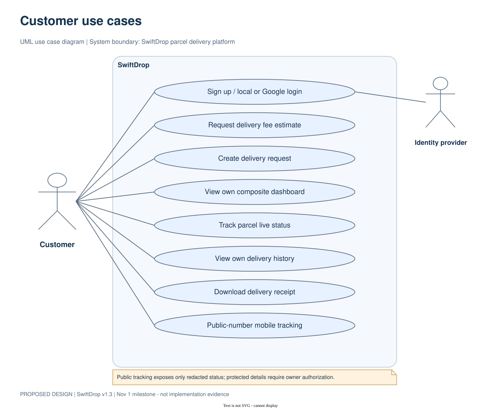
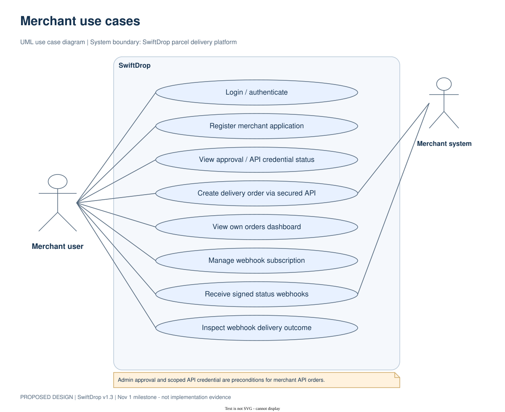
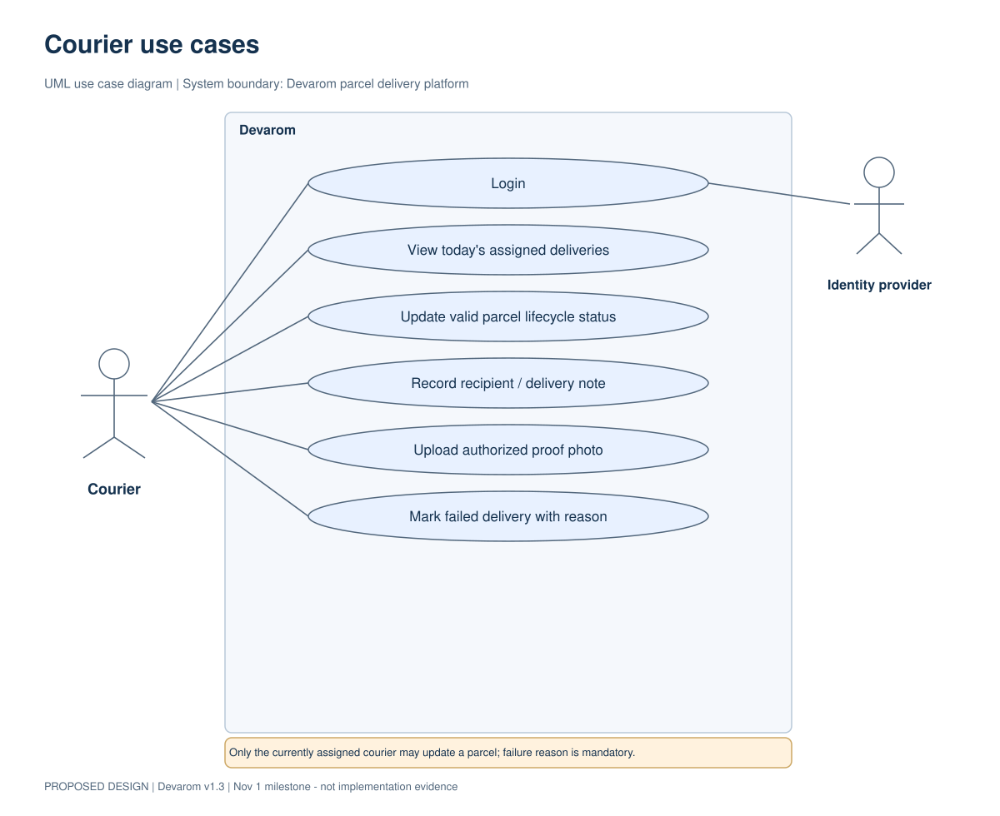
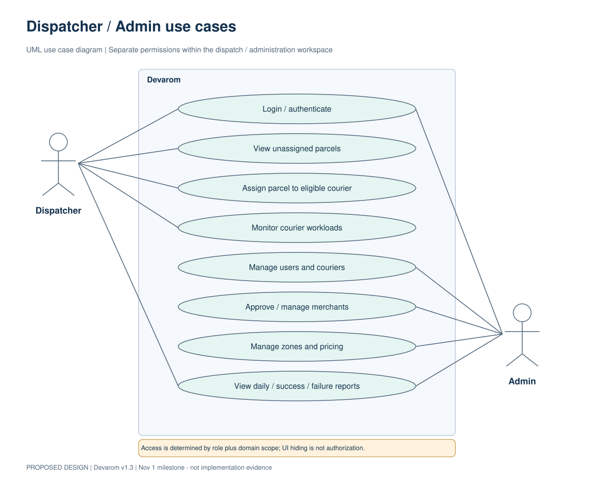
Each business service owns its own PostgreSQL database, schema migrations (Flyway), credentials and transactions. Identifiers that cross service boundaries (Keycloak subject, merchant ID, courier subject, quote ID) are stored as opaque values and resolved through the owning service's API, never through cross-database foreign keys. Keycloak keeps users, password hashes and role mappings; business services keep profiles keyed by the Keycloak subject.
| Brief entity | Owner | Tables |
|---|---|---|
| Users | Keycloak + Accounts | Keycloak realm users (credentials, hashed passwords); account_profiles (subject, e-mail, name, phone, sign-in disabled flag) |
| Roles | Keycloak + Accounts | Realm roles CUSTOMER, MERCHANT, COURIER, DISPATCHER, ADMIN; staff_profiles (staff role, department, assigned zone, status); identity_reconciliation_audit |
| Merchants | Accounts | merchants, merchant_business_audit, merchant_api_keys (hashed, scoped, expiring keys) |
| Parcels | Delivery | parcels (tracking number, sender, merchant, quote snapshot incl. weight, zones and service tier, version), idempotency_records, proof_of_deliveries, proof_cleanup_tasks |
| Status history | Delivery | status_history (append-only, one row per transition with reason, note, proof and resulting version); outbox_events |
| Couriers / assignments | Accounts + Delivery | Courier identity in staff_profiles; delivery_assignments (one active per parcel) and delivery_assignment_audits |
| Zones | Pricing | pricing_zones (code, name, transit hours, active) |
| Pricing | Pricing | pricing_rate_versions, pricing_rate_rules (zone pair, size band, fees), pricing_quotes (15-minute fixed quotes), pricing_admin_audit |
| Notifications & webhooks | Communications | notifications, notification_attempts, webhook_subscriptions, webhook_deliveries, webhook_attempts, consumed_events, poison_event_quarantine |
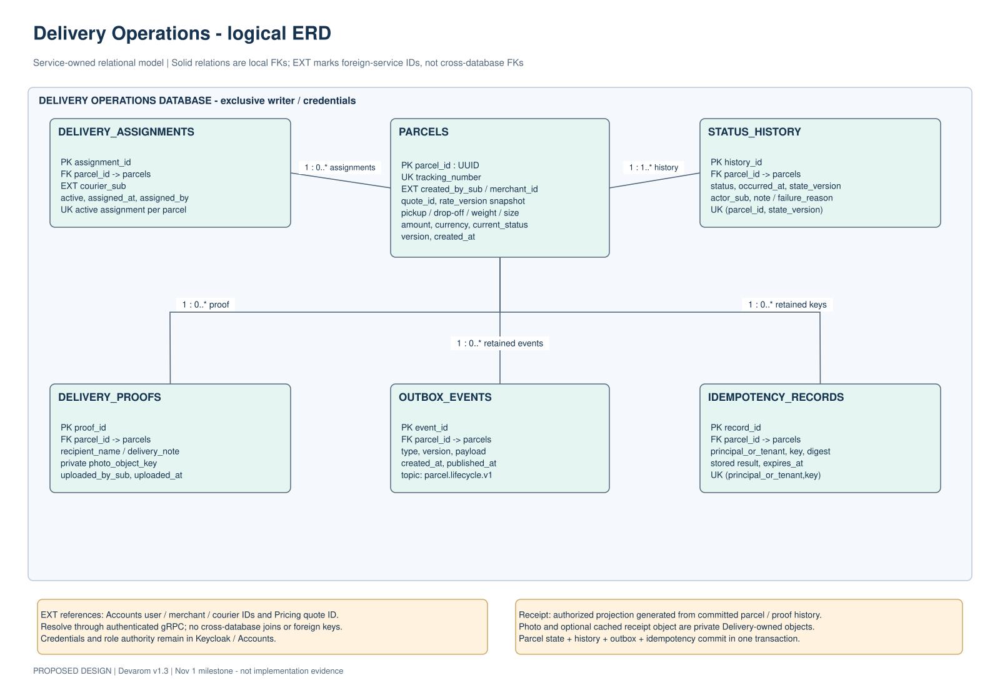
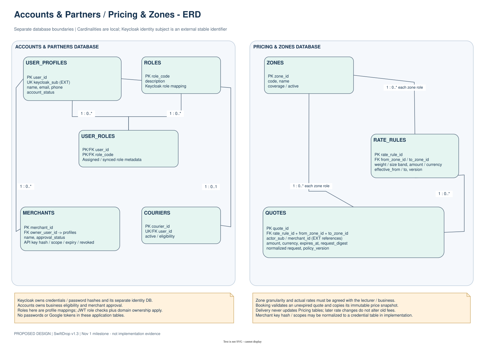
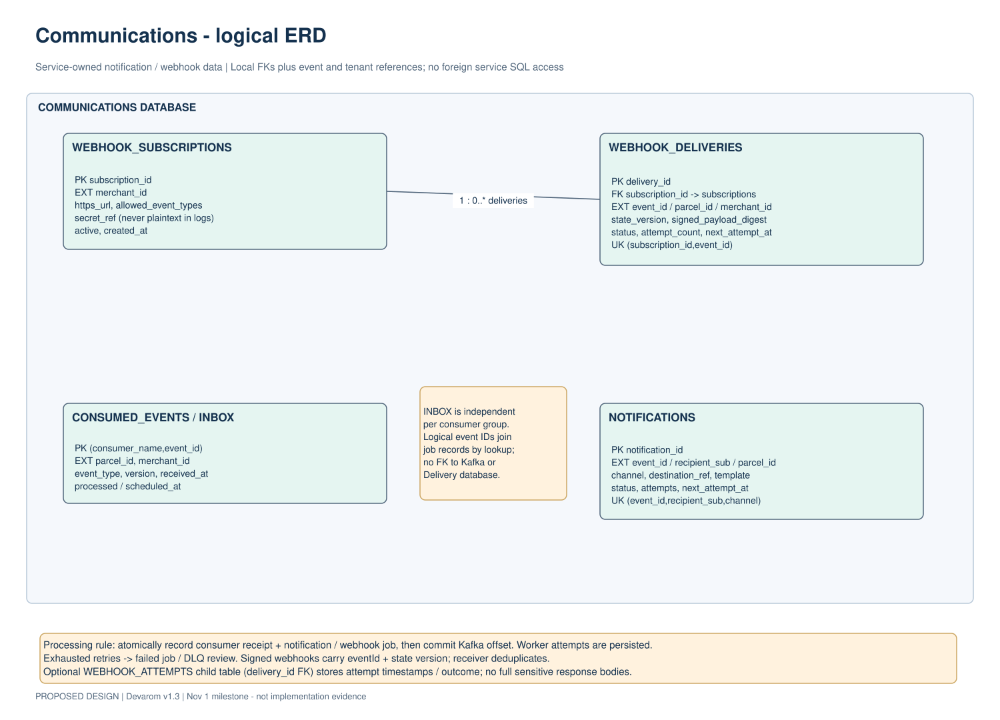
A parcel moves CREATED → PICKED_UP → IN_TRANSIT → OUT_FOR_DELIVERY → DELIVERED, and may move to FAILED from any non-final stage with a reason allowed for that stage (for example PARCEL_DAMAGED in transit, RECIPIENT_UNAVAILABLE out for delivery). DELIVERED requires an uploaded photo proof. Every change uses optimistic locking (expected version) and writes history and an outbox event in the same transaction. Assigning a courier is not a status change.
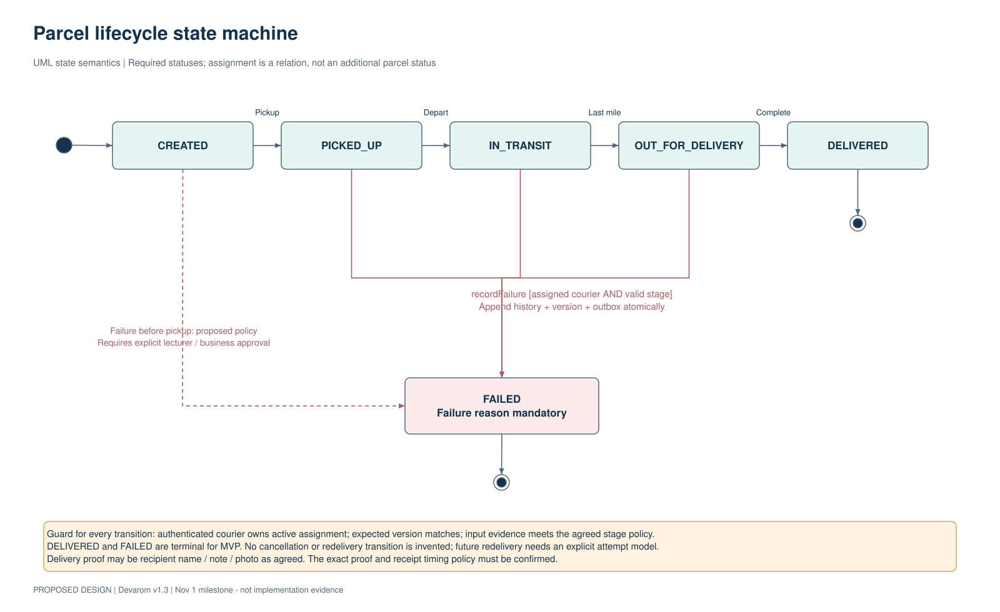
The system is split into four business services by business capability, plus an edge gateway, a read-only GraphQL query service and an optional AI assistant service. Each business service is a Spring Boot 4.1 / Java 21 application with its own database. The browser application is a React 19 + TypeScript single-page application served by nginx.
| Layer | Components | Responsibility |
|---|---|---|
| Presentation | React SPA (customer, merchant, courier, dispatcher, admin spaces; public tracking page); Spring Cloud Gateway (WebFlux) as the single entry point | UI, routing, JWT validation, CORS, rate limits, disabled-account check, problem-details errors |
| Business logic | Accounts & Partners, Pricing & Zones, Delivery Operations, Communications; GraphQL Query API (composition); AI assistant | Domain rules, authorization of every resource, state transitions, pricing, notifications and webhooks |
| Data | PostgreSQL 16 (one logical database and role per service), Keycloak's own PostgreSQL, MinIO (private proof photos), Kafka 4.2 (event log) | Durable state, private object storage, retained status events |
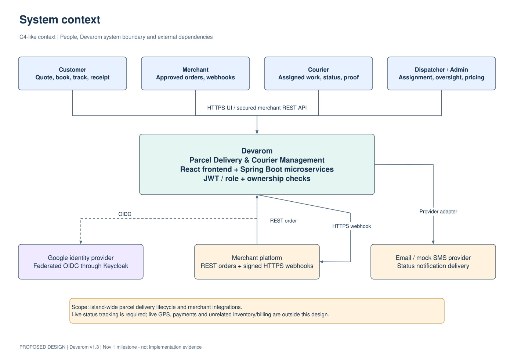
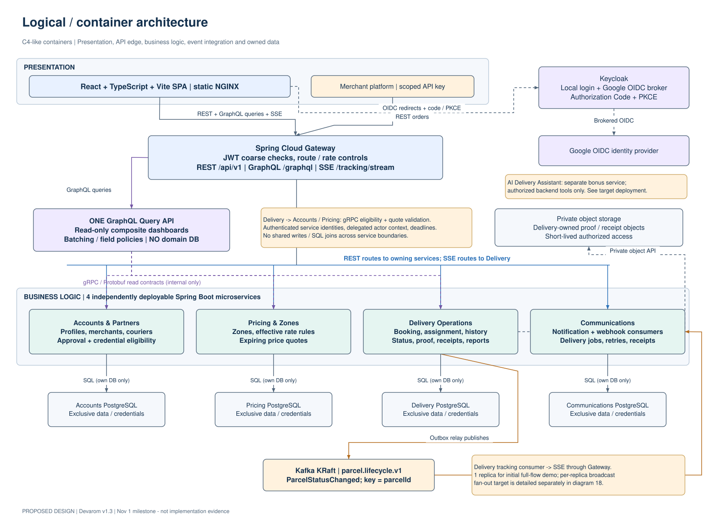
X-API-Key; receives signed webhooksparcel.lifecycle.v1 + DLTFigure A — Containers as run by platform/compose/start.sh. Ports are the local loopback ports.
| Concern | Choice | Reason |
|---|---|---|
| Frontend | React 19, TypeScript 6, Vite 8, TanStack Query, React Router | Typed, testable SPA; query caching and refetch for dashboards |
| Backend | Spring Boot 4.1, Java 21, Spring Security resource servers, Spring Data JPA, Flyway | Mature security and persistence; versioned migrations |
| Identity | Keycloak 26 with Google identity provider; Authorization Code + PKCE | Standards-based OAuth 2.0 / OIDC with social login, no passwords in our services |
| Internal calls | gRPC with Protobuf contracts and service tokens | Typed contracts, deadlines, efficient service-to-service reads |
| Events | Apache Kafka with a transactional outbox | Durable, replayable fan-out to independent consumers |
| Real time | Server-sent events | One-way status push is all tracking needs; works through the gateway with a bearer token |
| Containers | Docker, Docker Compose; Kubernetes with Helm (bonus) | Reproducible local run and a cluster deployment path |
| Pattern | Where it is used | Why |
|---|---|---|
| Request/reply (REST) | Browser and merchant systems → gateway → services: quotes, bookings, status updates, assignments, receipts, public tracking | Commands need an immediate, validated answer; REST is universal for browsers and merchant integrations. All paths are versioned under /api/v1. |
| Request/reply (gRPC) | Delivery → Pricing (validate quote), Delivery → Accounts (courier eligibility, merchant approval), GraphQL → all services, gateway → Accounts (API key validation) | Typed Protobuf contracts and deadlines for internal checks that must complete inside a request. |
| API gateway | Spring Cloud Gateway in front of all services | One entry point for authentication, CORS, rate limiting and routing; services stay off the public network. |
| Query composition | GraphQL Query API for customer, merchant, dispatcher and admin dashboards | One round trip for a dashboard that spans several services; strictly read-only and never touches databases directly. |
| Publish/subscribe via a message broker | Delivery publishes parcel.status.changed.v1 to Kafka; Communications (notifications, webhooks) and Delivery's tracking relay subscribe in separate consumer groups | Status changes trigger several independent reactions without the courier's request waiting for them; consumers can fail and catch up. |
| Transactional outbox | Delivery writes the parcel change, history and an outbox row in one transaction; a relay publishes to Kafka | No lost or phantom events when the database or broker fails between the two writes. |
| Idempotent receiver | Idempotency-Key on bookings; consumed_events in Communications | Safe retries: at-least-once delivery never books twice or e-mails twice. |
| Dead letter channel | parcel.lifecycle.v1.dlt and a poison-event quarantine with admin replay | Bad messages are parked and inspected instead of blocking the partition. |
| Webhook callback with retry | Communications → merchant HTTPS endpoint, HMAC-SHA256 signed, up to 5 attempts with exponential backoff, then EXHAUSTED | Push updates to merchants who cannot poll; signatures and timestamps prevent forgery and replay. |
| Server push (SSE) | Delivery → browser through the gateway for live tracking | Simple one-way stream; on reconnect the client refreshes from REST so it never shows stale state. |
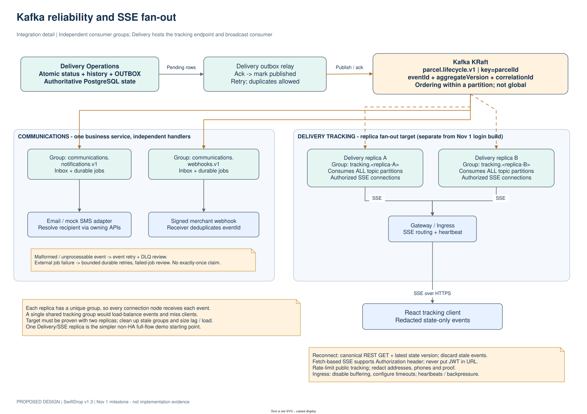
The customer gets a quote from Pricing (fixed for 15 minutes, Standard or Same Day). On booking, Delivery validates the quote over gRPC, then in one transaction stores the parcel with a price snapshot, the first history row, an idempotency record and an outbox event, and returns a tracking number. Repeating the same Idempotency-Key returns the original booking; a used quote is refused with 409.
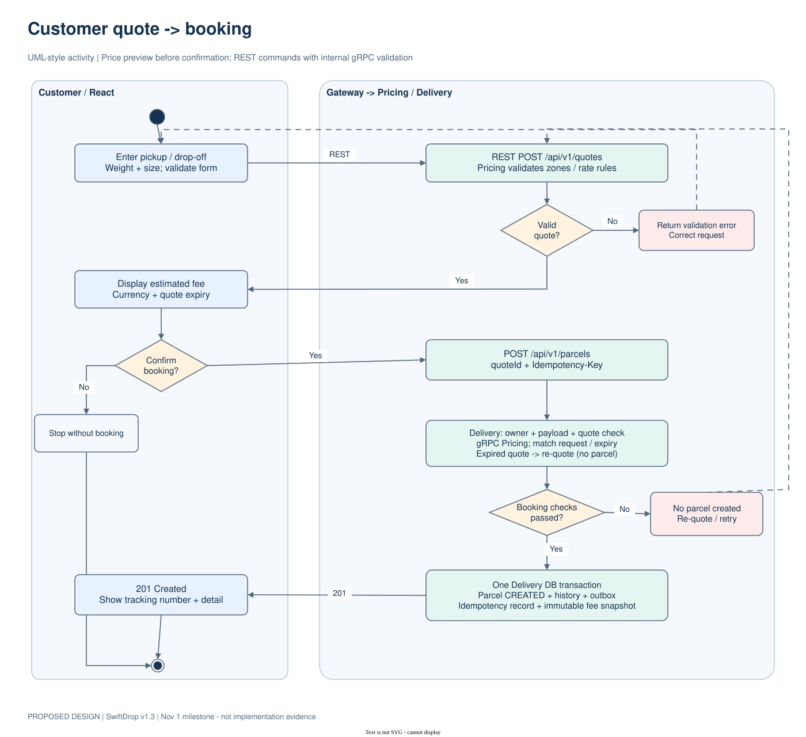
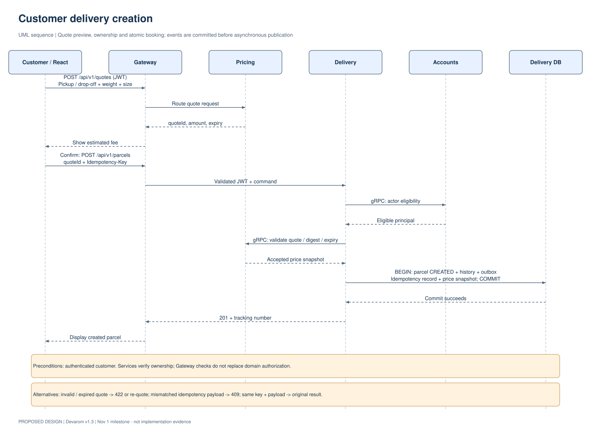
The merchant system sends X-API-Key. The gateway validates the key with Accounts (hash lookup, scope, expiry, approved merchant), then forwards the request with the merchant tenant. The merchant prices the order and books it with an Idempotency-Key; the order appears in the merchant dashboard and status changes are pushed back by webhook (6.3).
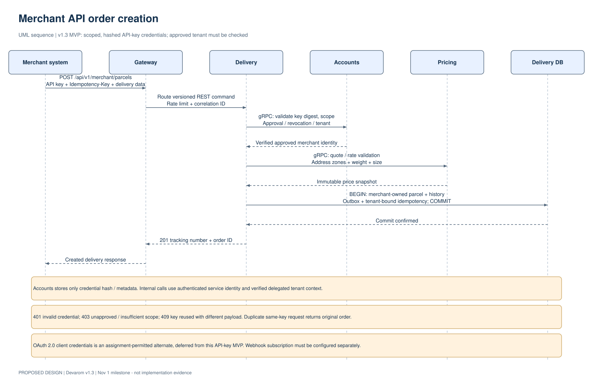
The courier's update is checked against their active assignment, the allowed transition and the expected version; DELIVERED needs a stored proof photo. The change and its outbox event commit together. Kafka then delivers the event to the notification consumer (e-mail, mock SMS), the webhook consumer (signed callbacks with retry) and the tracking relay (SSE to open browsers).
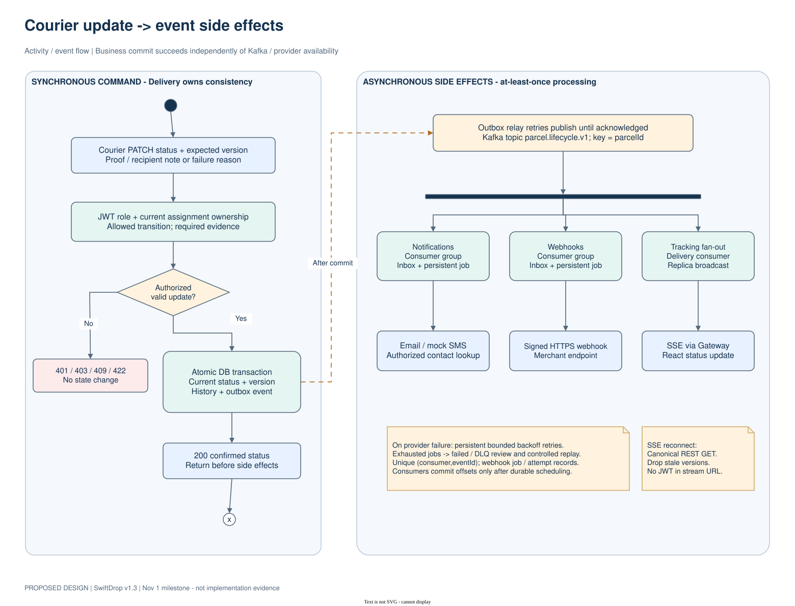
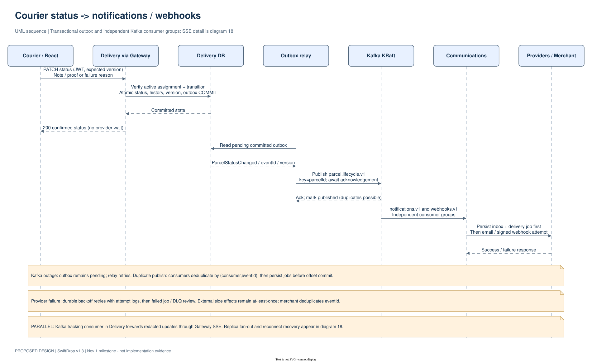
The SPA starts Authorization Code with PKCE at Keycloak; “Continue with Google” adds the Google identity-provider hint, and Keycloak brokers the Google login. Keycloak returns a code to the SPA callback, which exchanges it for short-lived tokens kept in memory only. Every API call sends the access token; the gateway and each service validate issuer, signature, audience, expiry and roles, and services also check resource ownership.
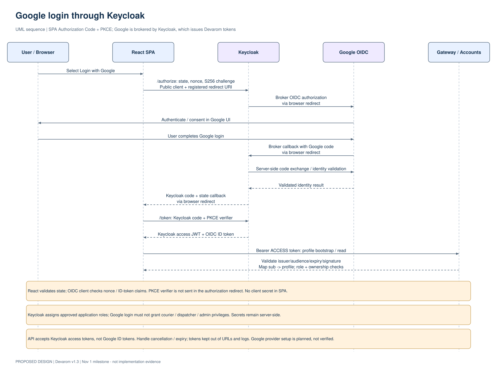
The dispatcher selects an unassigned parcel and an eligible courier (checked with Accounts). One active assignment per parcel is enforced by the database. Before pickup the dispatcher can reassign or unassign; each change is audited.
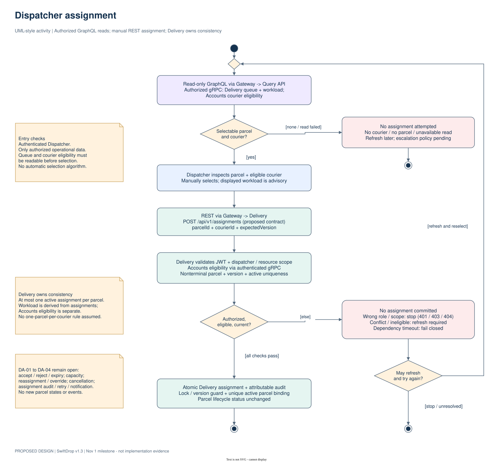
| Role | Allowed |
|---|---|
| Public | Public tracking by number (no addresses), zone list, price quotes, AI assistant (public tools only) |
| Customer | Own profile, bookings, history, receipts, live tracking stream |
| Merchant | Own merchant profile, API keys, webhooks, orders, dashboard (approved merchants only for orders and keys) |
| Courier | Own assignments, status updates and proof upload on assigned parcels only |
| Dispatcher | Unassigned queue, assign/reassign/unassign, courier workloads, reports for assigned zones |
| Admin | Everything a dispatcher can do, plus users, staff, merchant approval, zones and pricing, platform reports |
| Pattern / principle | Where in the code |
|---|---|
| Repository | Spring Data repositories per aggregate, e.g. ParcelRepository, DeliveryAssignmentRepository, WebhookSubscriptionRepository; services never share repositories across databases. |
| Strategy (pricing) | PricingStrategy interface with TieredWeightPricingStrategy, selected in PricingConfiguration and used by PricingCalculationService; a new tariff model is a new strategy, not an edit. |
| Observer / publish-subscribe | Kafka consumers ParcelLifecycleKafkaConsumer and WebhookLifecycleKafkaConsumer react to status events; ParcelSseConnectionManager notifies open browser streams. |
| Transactional outbox | OutboxEventFactory and KafkaOutboxRelay in Delivery. |
| Adapter / ports and adapters | KeycloakIdentityAdapter (Keycloak admin API), gRPC clients such as GrpcCourierEligibilityClient, proof storage adapter for MinIO. |
| Facade | The GraphQL Query API hides several gRPC calls behind one dashboard query; the gateway is the single facade for clients. |
| State machine | ParcelLifecycleTransitionContract defines allowed transitions and stage-specific failure reasons. |
| Retry with exponential backoff | Webhook dispatcher (WebhookDispatchProperties, response classification for retryable failures). |
| Centralised error handling | @RestControllerAdvice handlers returning Problem Details in every service and at the gateway. |
| SOLID | Single responsibility per service and per class (controllers translate, services decide, repositories persist); open/closed via strategies and validators; dependency inversion through constructor-injected interfaces, which is what makes the services unit-testable with mocks. |
| DRY | Shared security-adapter library for JWT, service identity and gRPC security across services; shared Protobuf contracts in contracts/grpc; shared UI components and API clients in the frontend. |
| Optimistic concurrency | Expected-version checks on status changes and assignments; stale writes get 409. |
Every service has a Dockerfile; platform/compose/compose.yaml runs the whole system, including the PostgreSQL servers, Kafka, MinIO, Mailpit and Keycloak. start.sh checks capacity and ports, generates per-installation secrets, starts infrastructure first, imports the Keycloak realm, then starts the services and waits for health checks. All ports bind to loopback only.
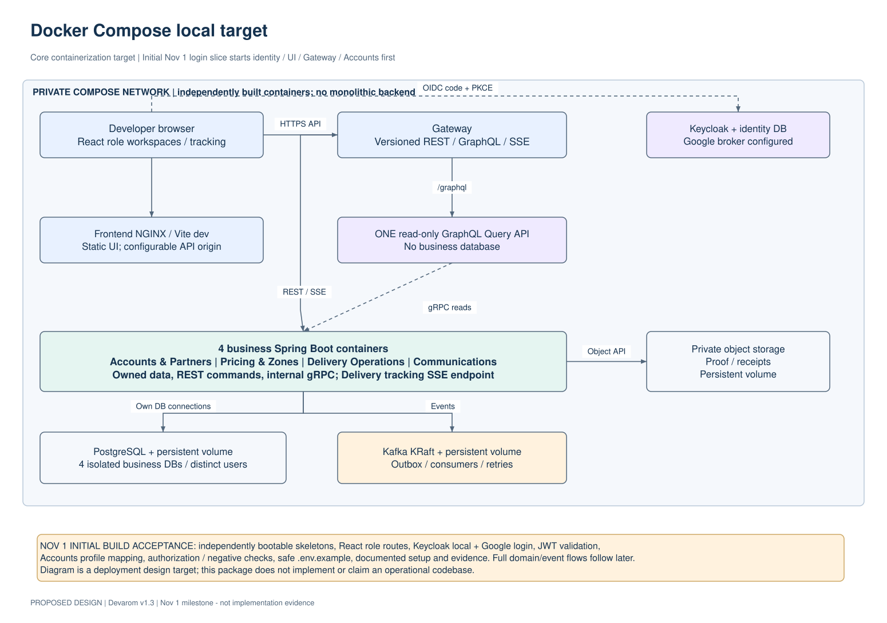
A Helm chart in platform/kubernetes/helm/swiftdrop deploys the frontend, all services, the databases and Kafka with ConfigMaps, Secrets, Services, an Ingress, NetworkPolicies, PodDisruptionBudgets and service accounts. A gated Azure K3s path (Terraform) and a local k3d path are documented.
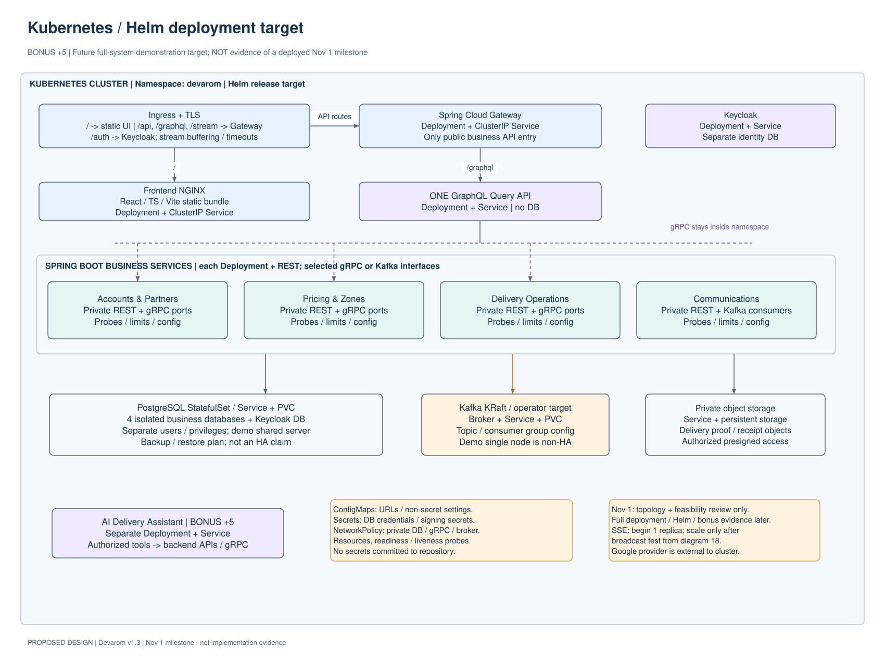
The assistant answers questions such as “Where is my parcel?” or “How much to send 2 kg to Kandy?” by calling the same backend APIs as the application. It runs as its own service behind the gateway, uses Google Gemini with function calling, and exposes the same tools over the Model Context Protocol (JSON-RPC) for other AI clients.
/api/v1/assistant/chat, rate limited, 60 s route timeout/api/v1/assistant/mcp (MCP JSON-RPC) for external AI clients| ADR | Decision | Consequence |
|---|---|---|
| 0001 | Independent business services in one monorepo | Separate deployables and databases; shared contracts and tooling in one place |
| 0002 | React SPA with Keycloak identity | Standards-based login incl. Google; no password handling in our code |
| 0003 | Hybrid edge: REST commands plus read-only GraphQL | Simple commands, efficient dashboards; GraphQL has no mutations |
| 0004 | gRPC for internal synchronous calls | Typed contracts with deadlines; not exposed to browsers |
| 0005 | Kafka for asynchronous parcel events | Independent consumers for notifications, webhooks and tracking |
| 0006 | Service-owned PostgreSQL with a transactional outbox | No cross-service joins; reliable event publication |
| 0007 | SSE for status-only real-time tracking | Simple push; REST refresh on reconnect |
| 0008 | Bonus scope after the login milestone | Both bonuses were delivered later (Kubernetes/Helm and the AI assistant) |
| 0009 | No custom e-mail OTP codes | Keycloak's signed e-mail verification links and optional authenticator-app TOTP are used instead |
| 0010 | Merchant machine-credential lifecycle | Hashed, scoped, expiring, revocable API keys bound to an approved merchant |
| 0011 | Zero-cost hosting and an Azure allowlist | Cloud deployment is gated and opt-in |
| 0012 | Database recovery targets for local hosting | Documented RPO/RTO and backup approach |
The lecturer approved a nine-member team. Ownership is by feature pair; services are shared across pairs, and cross-pair changes go through the owning pair's review.
| Team | Members | Primary responsibilities |
|---|---|---|
| Customer | Gajanthan, Sinthuha | Customer profile and landing, quote and booking, history and tracking screens; Accounts business profiles and schema |
| Merchant | Eric, Thuvarahan | Merchant registration and approval, order API, dashboard, webhook configuration |
| Courier | Abhinaya, Vibhushan | Assigned deliveries, status changes, failure reasons, proof capture; independent security verification (Vibhushan) |
| Dispatcher / Admin | Pushmitha, HarithKeshan | Unassigned queue, assignments and workloads, zone and pricing admin, approvals and reports; staff read models |
| Platform & cross-module | Suthankan1 | Authentication end to end (Keycloak, Google, SPA session, gateway and service JWT security), platform and containers, integration across services, CI, Kubernetes and AI assistant bonuses |
Detailed per-PR evidence is in docs/team/CONTRIBUTION_LOG.csv; ownership rules are in docs/team/OWNERSHIP.md.